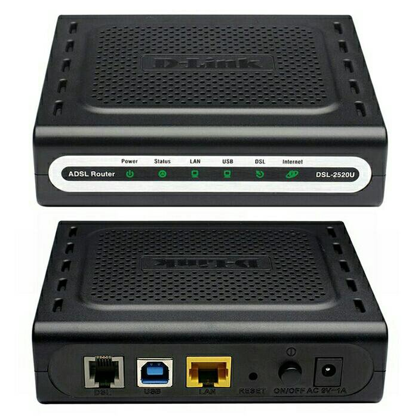

| Тип канала | Применение | Описание |
|---|---|---|
| Выделенный | организация ответственных связей между крупными локальными сетями | канал передачи данных с фиксированной пропускной способностью, постоянно соединяющий двух абонентов |
| Динамический | для всех | составной канал, образующийся из нескольких последовательно соединенных каналов на время передачи передачи сообщения или на более длительный срок |
Для подключения компьютера к сети в обоих типах сетей может использоваться специальное устройство, называемое модемом.

Идея использования этой технологии зародилась в конце 1970-х годов и заключалась в том, что любой компьютер в сети должен иметь несколько альтернативных маршрутов для отправки информации. Кроме того, при передаче массива данных он должен разбиваться на множество пакетов. После формирования всех пакетов они передаются по сети (в том числе и по разным каналам связи), а на принимающей стороне происходит проверка их целостности и формирование исходного сообщения.
Порядок обмена пакетами, а также структура заголовков пакетов определяется протоколом TCP
Схема коммутации пакетов
Плюсы метода
Минусы метода